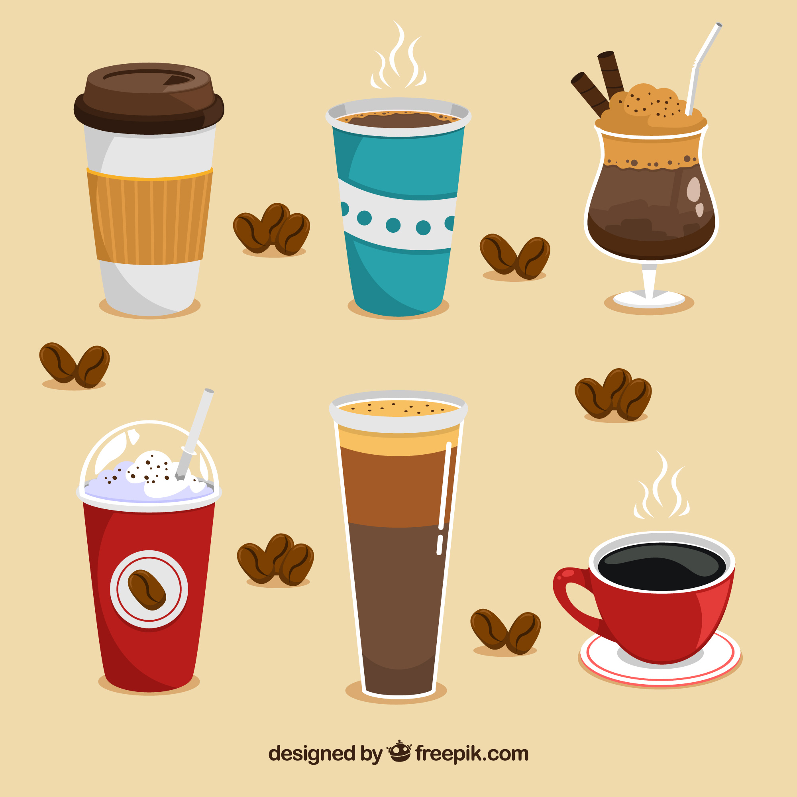

Coffee is a drink brewed from roasted and ground coffee beans. Getting these beans is an arduous process with a lot of steps.
First off, the coffee needs to be grown and picked. Coffee is actually the seed of a coffee cherry that grows on a coffee plant. The plant is harvested either annually or bi-annually depending on where the coffee is being grown.
After the coffee is harvested it has to be processed to remove the seed from the fruit. Depending on how the farm chooses to proccess their beans, the pulp and husk is separated from the bean and then sorted into different grades of coffee.
Now that the beans have been proccessed, roasters can choose to use the beans as a single origin coffee or mix multiple types of beans in a blend.
The beans are now ready to be roasted. There are many different types of roasts, most commonly being organized under 3 categories: Light, Medium, and Dark.
The last step in the proccess is grounding and brewing. The coarsness of the grind is determined by the type of coffee and chosen brewing method to bring out specific flavors in the coffee. The different brewing methods produce fairly similar flavors and are up to personal preference.
Coffee catches a lot of flak for being too bitter, but properly roasted and brewed coffee actually has a complex combination of different flavors and aromas that are anything but bitter.
The different flavors and aromas in coffee are often based off of where they were grown and how they were brewed. Depending on whether the beans were grown in The Americas, Africa, or Asia heavily reflect on the flavor and mouthfeel.
Some coffee snobs will tell you that the only way to drink your coffee is black, however many coffees can actually benefit from adding milk or cream. Other coffees, however, taste much worse with milk, which is why knowing your coffee and what it plays well with can greatly enhance your coffee experience.
Aside from drinking coffee black or with cream and sugar, there are a wide variety of different coffee and espresso drinks that all taste wildly different. Brewing coffee cold or mixing it with different syrups and milks allow you to make so many different kinds of drinks that anyone can find something they'd enjoy even if they don't like traditional coffee.
